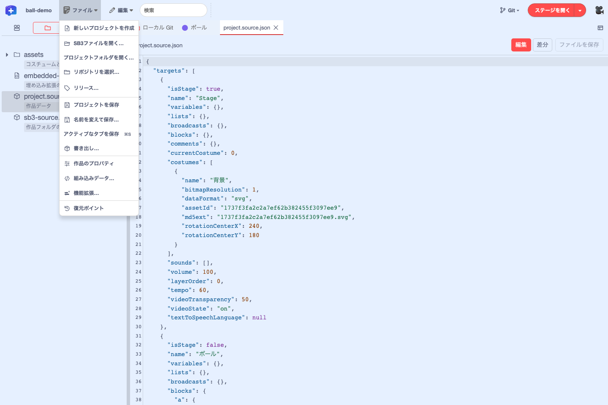

機能ガイド 2/12 · 2026年11月14日更新
画面の構成とメニュー
最上段のメニューバーでは、作品の操作を「ファイル」「編集」メニューに、ステージ・Git・録画・デバッグと拡張の操作を右側にまとめています。
2.1 最上段のメニューバー
画面最上段には、左から次の要素が並びます。
| 位置 | 要素 | できること |
|---|---|---|
| 左端 | TurboWarp Plusのロゴ | TurboWarp Plusメニューを開く |
| 左 | 作品タイトルの入力欄（初期表示は「プロジェクト」） | 作品の名前を変える |
| 左 | 「ファイル ▾」「編集 ▾」 | 作品の操作と編集の操作 |
| 中央 | 検索欄「検索」 | 作品全体を検索・置換する |
| 右 | 「Git ▾」（リポジトリを選ぶとブランチ名、例：「main ▾」） | 「リポジトリを選択…」「ローカル Git を開く」、ブランチの切り替え |
| 右 | 「ステージを開く」と「▾」 | ステージを開く・開き方を選ぶ |
| 右 | 🎥（録画） | ステージを録画する。録画中はカウントダウンや「録画を停止」などの状態が横に出る |
| 右 | 「…」（デバッグ） | デバッガーを開く |
| 右端 | 機能拡張のボタン領域 | 拡張の設定や操作 |
メニューバーの下、画面の左端には、縦に並ぶ4つの切り替え（アクティビティバー）があります。左ドロワーに出す内容を「スプライト一覧」「プロジェクトフォルダ」「Git 履歴」「AI エージェント」から選びます。スプライト一覧の上には「スプライトを検索」「スプライト一覧を固定表示」「アンドック」のボタンが、下には「背景」とスプライトを追加するボタンが並びます（スプライトと背景を編集する、Gitと作品フォルダ）。

時間のかかる操作の間は、マウスポインターが待機中の表示に変わります。
2.2 TurboWarp Plusメニュー
ロゴを押すと「TurboWarp Plus プロジェクト情報」メニューが開きます。TurboWarpの各種設定、GitHubとAIエージェントの接続設定、このEditorの情報がまとまっています。

- TurboWarp Plus Editor …について：Editorのバージョンと配信元の情報を開きます。
- 表示設定：テーマや言語などを切り替えます。言語を切り替えても、編集中の作品と読み込んだ拡張は保たれます。
- 動作設定：TurboWarpの実行に関する設定です。
- アドオン・高度な設定：TurboWarpのアドオンと詳細設定を開きます。
- GitHub 接続設定…：GitHub に接続するときの既定の方式を選びます。公開版では「GitHub 接続先が設定されていません。」と表示されます（接続がない場合）。
- AI エージェント設定…：左端の「AI エージェント」のメニューに出すサービス（ChatGPT、Claude など）と、その URL を選びます。
- ソースコード・ライセンスとクレジット：リポジトリと、同梱するパッケージのライセンスを開きます。
右端に矢印付きの四角のアイコンがある項目は、別のタブで開きます。
2.4 編集メニューとショートカット
「編集」メニューには、「削除の取り消し」「元に戻す」「繰り返し」「切り取り」「コピー」「貼り付け」「検索と置換」「コードブロックの再配置」が並びます。各項目にはアイコンとショートカットキーが表示されます。

| 操作 | Windows・Linux | macOS |
|---|---|---|
| 元に戻す | Ctrl+Z | ⌘Z |
| 繰り返し | Ctrl+Y | ⇧⌘Z |
| 切り取り・コピー・貼り付け | Ctrl+X・C・V | ⌘X・C・V |
| 作品全体を検索 | Ctrl+F | ⌘F |
| 検索と置換 | Ctrl+Shift+F | ⇧⌘F |
| 保存（左ドロワーの表示に応じて） | Ctrl+S | ⌘S |
- 「元に戻す」「繰り返し」は、操作中のコード画面の履歴に対して働きます。
- 「切り取り」「コピー」は、コード画面で選んだブロックに対して働きます。「貼り付け」は、コピーしたブロックがあるときに選べます。
- 「検索と置換」は、作品全体の検索のパネルを開きます。最上段の検索欄と同じパネルで、検索欄に語句が入っていれば「置換後の文字列」の欄に、空なら検索欄にカーソルが移ります。
- 「コードブロックの再配置」は、コード画面のスクリプトを並べ直すダイアログを開きます（コードの並びを変える）。
左ドロワーがスプライト一覧のときは、Ctrl+S／⌘S でプロジェクト全体を保存します。プロジェクトフォルダを表示しているときは、アクティブなタブのファイルを保存します。どちらに割り当てられているかは、「ファイル」メニューでショートカットが表示されている項目で確かめられます。 保存の操作

2.5 右上の機能拡張ボタンとデバッガー
カメラの権限やTeachable Machineのモデルの設定など、機能拡張が用意する操作ボタンは、メニューバー右端の角丸の枠（機能拡張のボタン領域）にまとめて表示されます。ボタンは拡張が必要とするときだけ現れ、作品を読み込み直すと消えます。押すと、その拡張の設定画面や操作が開きます。
- メニューバーのボタンはアイコンだけを表示します。ボタンの名前は、ポインターを置いたときのツールチップで確かめます。
- TurboWarpのデバッガーを有効にしていると、🎥（録画）と機能拡張のボタン領域の間に「…」の「デバッグ」ボタンが表示されます。デバッガーと録画のボタンは、機能拡張のボタン領域には入りません。
- たとえば紙芝居拡張は、YAML台本を実行している間だけ、制作用のリロード操作を表示します。
拡張の作者は、サンドボックスなしの拡張から Scratch.gui.stageControls.addButton でボタンを登録できます。
2.6 Plus標準配置とScratch配置を使い分ける
Plus標準配置では、左端のアクティビティバーとスプライト一覧を固定表示した状態で開きます。中央のタブでコードや素材を編集し、ステージはメニューバーの「ステージを開く」から別ウィンドウ・タブ・引出しに開きます（ステージを開いて作品を動かす）。
従来のScratch配置で作業するには、エディターのURLに twPlusStandardLayout=0 を付けて開き直します。コード領域の右にステージとスプライト一覧が並び、左下に拡張を追加するボタンが表示されます。